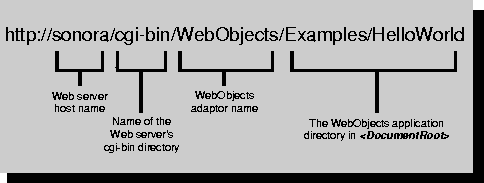

Table of Contents
Table of Contents  Previous Section
Previous Section
Running a WebObjects Application
WebObjects applications run on a web server. Your users connect to a WebObjects application using web browsers that they run on their own (client) machines. How does a user start a WebObjects application, and how does the application communicate with the browser?
Users run a WebObjects application using a Uniform Resource Locator (URL) similar to the one shown in Figure 4. (Of course, you'd probably provide a button or a link on a static web page that would take users to this URL rather than forcing your users to type such a long string.)

Figure 4. A URL to Start a WebObjects Application
To start your own applications, you open a command shell window, go to the directory that contains your application, and enter the application command. WebObjects starts up your application, opens the web browser, and enters the URL in the web browser for you. For example, to start the Java version of HelloWorld, go to the directory <DocRoot>/WebObjects/Examples/Java/HelloWorldJava/HelloWorldJava.woa, which contains the executable file, and enter HelloWorld on the command line. On Windows NT, you can simply navigate to this directory in the Explorer and double-click the HelloWorld.exe file.
When you run a WebObjects application, it communicates with the web browser through the chain of processes shown in Figure 5.
Figure 5. Chain of Communication Between the Browser and Your WebObjects Application
Here is a brief description of these processes:
Two of these, WebObjects adaptors and WebObjects application executables, are described next.
Table of Contents  Next Section
Next Section